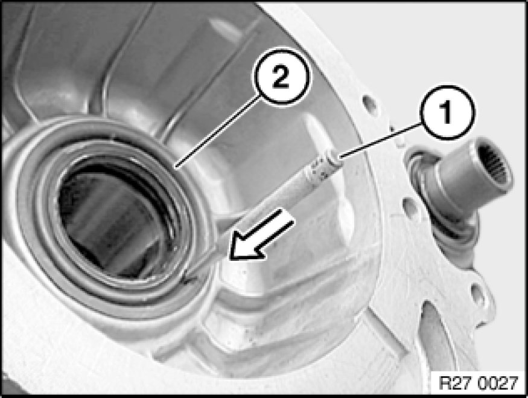
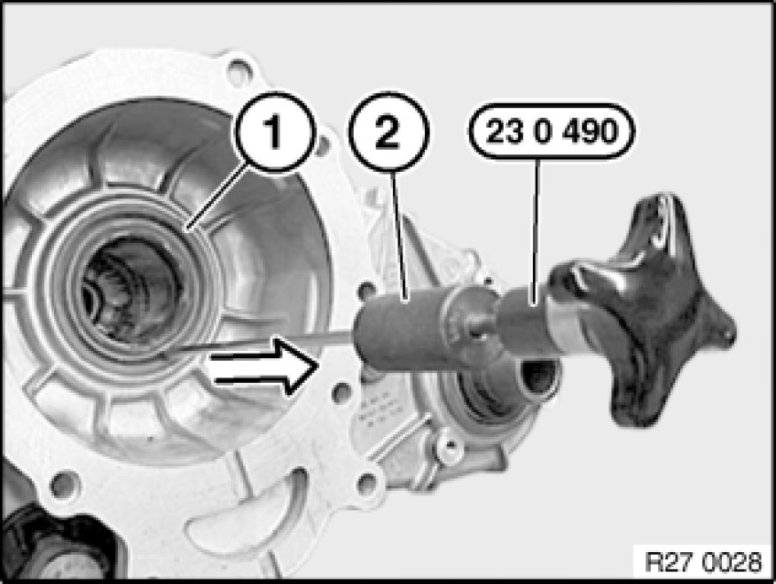
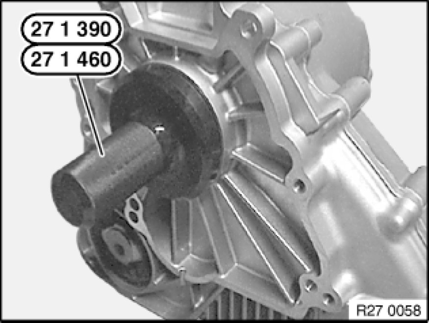

Replacing Radial Shaft Seal for Drive Flange (ATC 400/500 X-Drive)
27 21 010 - Replacing radial shaft seal for drive flange (ATC 400/500 X-Drive)

Special tools required:
- 23 0 490 23 0 490 Extractor
- 27 1 390 27 1 390 Drift

Important!
After completion of work, check gear oil level Changing Oil In Transfer Box (ATC 400/500) and top up if necessary.
Use only approved gear oil in this transfer box.

Necessary preliminary tasks:
- Remove transfer box Removing And Installing Transfer Case (ATC 400 X-Drive).

Drive a hole into radial shaft seal (2) using a center punch (1).
Important!
Do not use a drill as drillings may result in transmission malfunction.
Note:
Illustration shows NV125 transmission

Screw in special tool 23 0 490 23 0 490 Extractor.
Drive out radial shaft seal (1) with impact weight (2).
Note:
Illustration shows NV125 transmission

Drive in radial shaft seal with special tool 27 1 390 27 1 390 Drift.

Add final details to vehicle.
Check oil level.
Check transmission for leaks.